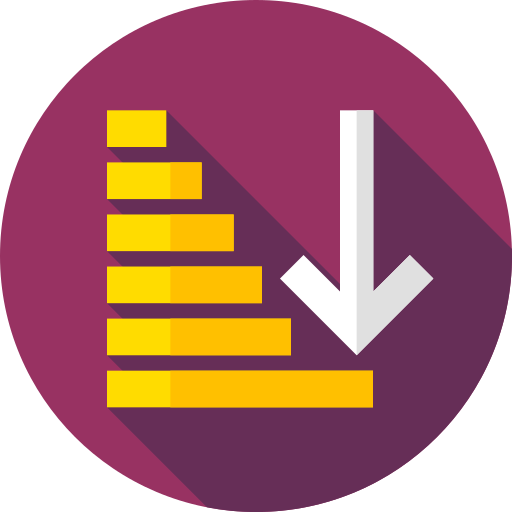
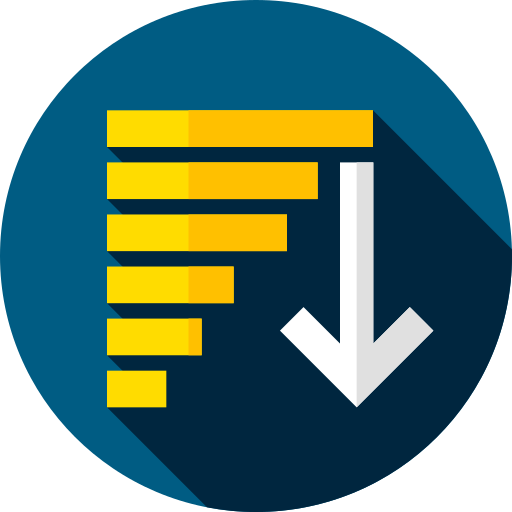

<ion-header [translucent]="true">
  <ion-toolbar color="primary">
    <ion-grid>
      <ion-row>
        <ion-col size="8">
            <ion-title>
              Home
            </ion-title>
        </ion-col>
        <ion-col size="4">
            
            
        </ion-col>
      </ion-row>
    </ion-grid>
    
  </ion-toolbar>
</ion-header>

<ion-content [fullscreen]="true" padding>
   <ion-searchbar [(ngModel)]="searchTerm" (ionChange)="setFilteredItems()"></ion-searchbar>
   <ion-list>
    <ion-item *ngFor="let item of userList">
      <ion-grid (click)="openProfilePage(item)" routerDirection="forward">
        <ion-row>
          <ion-col size="3">
            <ion-avatar>
              
            </ion-avatar>
          </ion-col>
          <ion-col size="8">
            <ion-row>
              <ion-label>{{item.full_name}}</ion-label>
            </ion-row>
            <ion-row class="top-margin-10">
                <ion-label>{{item.email}}</ion-label>
              </ion-row>
          </ion-col>
        </ion-row>
      </ion-grid>
    </ion-item>
  </ion-list>
</ion-content>
<ion-footer>
  <ion-item>
    <ion-grid>
      <ion-row>
        <ion-col>
          <ion-button (click)="getPrevRecord(currentPage)" disabled="{{prevBtnDisable}}">Previous</ion-button>
        </ion-col>
        <ion-col size="4">
          <ion-button class="width-100" (click)="getNextRecord(currentPage)" disabled="{{nextBtnDisable}}">Next</ion-button>
        </ion-col>
      </ion-row>
    </ion-grid>
  </ion-item>
</ion-footer>
